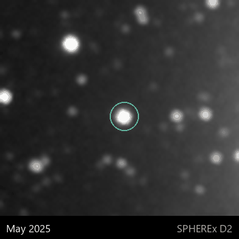

Pair of brown dwarfs · T1 + T6
Epsilon Indi B
Two brown dwarfs orbiting a nearby star, moving 4.7 arcseconds per year. SPHEREx sees the pair as one dot.

Two brown dwarfs, objects too small to shine like stars, orbiting a star 12 light-years away. That star, Epsilon Indi A, is the bright one beside the ring on the map; the pair in the ring is about 4,000 times fainter. SPHEREx sees the pair as one dot sliding south-east. Its spectrum has deep gaps near 1.4, 1.9 and 2.7 microns, where water vapour absorbs the light, and near 3.3 microns, where methane does.
What to look for
The bright star 6.7 arcminutes to the west is Epsilon Indi A, the star this pair orbits; the pair, in the ring, is about 4,000 times fainter. Watch it slide to the south-east from visit to visit. Then look at the spectrum: the deep dips near 1.4, 1.9 and 2.7 microns are water vapour and the one near 3.3 microns is methane, in the atmospheres of the brown dwarfs.
SPHEREx has 463 exposures of this spot, from April 24, 2025 to October 2, 2026.
Open Epsilon Indi B in Chronosphere
Over a quarter of a century

Sources: SPHEREx, NASA/JPL-Caltech, IRSA · SIMBAD · Gaia DR3 · 2MASS · WISE, NEOWISE · Wikipedia